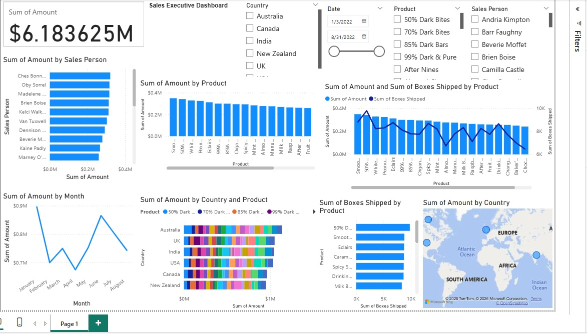
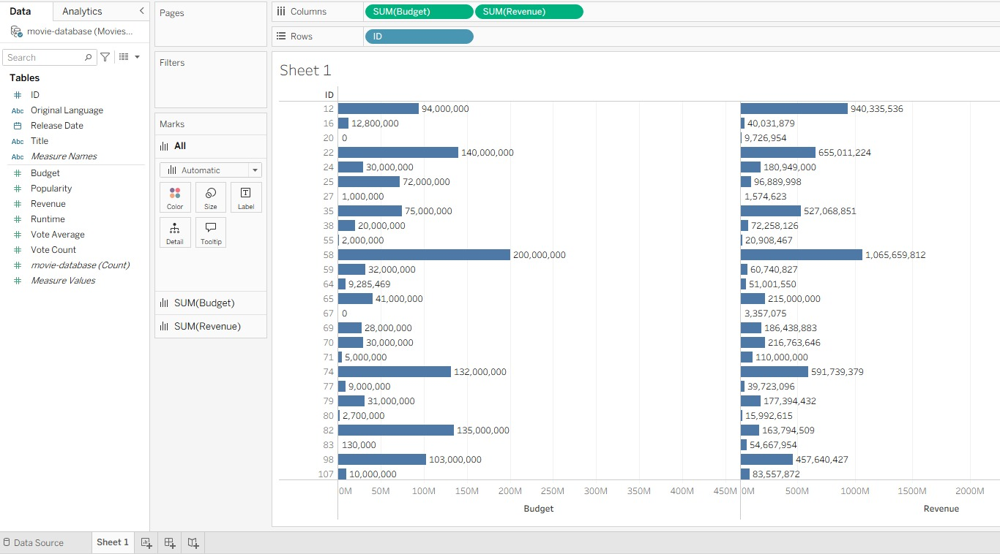

Marylene Mbugua
Data Scientist & Data Analyst & IT Support
marylenewaithera@gmail.com | +254717075115
About Me
I am a Computer Science professional with a Second Class Upper Division degree from Karatina University and a Distinction in Computer Applications from Top Mark Computer College. I have practical experience in data science, data analysis, predictive models, and IT support.
I am comfortable working with large datasets to draw assumptions from created predictive models and from analyzing data. Having worked on several data science projects to enhance my skills and experience, I am proficient with model deployment and skilled at analyzing data to find important trends and documenting key findings to show exactly what the data means.
Additionally, I am proficient in diagnosing and resolving hardware, software, and network issues, supporting ERP platforms, managing user accounts, backups, and system updates, and ensuring secure, reliable IT infrastructure. I am experienced in LAN/WAN troubleshooting, IP configuration (DHCP, DNS), firewall monitoring, and front-end web technologies, with a strong ability to maintain system uptime and operational efficiency. My goal is to use my analytical mindset to provide clear insights, help improve decision-making, and support organizational growth.
Technical Skills
Data Science & Analytics
- Languages: Python (NumPy, Pandas, Matplotlib, Seaborn, Scikit-learn, SciPy, Statsmodels, Plotly, Pickle), SQL
- Models: Random Forests, Linear/Logistic Regression, XGBoost, Supervised/Unsupervised Learning
- Workflow: Feature Engineering, Outlier Handling, Model Validation, Fast API Deployment
- Tools: Power BI, Excel, Google Colab, Tableau, Jupyter Notebook, Postman
- Data Management:MySQL, PostgreSQL, MongoDB.
Networking & Systems
- Networking: Server/Router configuration, LAN/WAN Troubleshooting, Cat5/Cat6 Termination, Printer Networking switch and access point configuration
- Protocols: TCP/IP, OSI Model, DHCP\static IP addressing,DNS, Network Segmentation & OSI model
- Security: Firewall Management (pfSense),Antivirus Deployment
- Monitoring: Winbox, Cisco Packet Tracer, Network Optimization
Admin, Web & Support
- OS: Windows, Linux & Ubuntu Server Administration
- Enterprise: ERP Systems, Microsoft Dynamics 365, CRM, Billing & Biometric Systems
- Web: HTML, CSS, JS, Django, WordPress, Bootstrap
- Support: user management, backups and recovery (TrueNAS), hardware diagnostics, laptop/computer upgrades, antivirus deployment, system monitoring and maintenance & IP Phone Troubleshooting
Professional Certifications
Work Experience
ICT & Data Analyst (Intern)
Mathira Water & Sanitation Company | June 2025 – Nov 2025
- Revenue & Collection Analytics: Built Power BI Dashboards to track "Collection Efficiency" and Accounts Receivable, identifying long-overdue bills and categorizing customers by payment risk to prioritize collection efforts.
- Predictive Modeling: Developed Regression Models to forecast "Non-Revenue Water" by analyzing correlations between customer registration and consumption patterns.
- Business Intelligence: Automated Biometric Attendance Analysis via Power BI to track employee punctuality and regional performance trends across different geographic zones.
- Data Engineering: Managed large-scale data collection, cleaning, and transformation using SQL and PgAdmin to ensure high-quality datasets for management reporting.
- Systems Administration: Managed Microsoft Dynamics 365 and ERP-billing system and CRM platforms to streamline billing, while configuring servers and monitoring databases to ensure 99.9% system uptime.
- Network Security: Optimized infrastructure using pfSense firewalls and configured VLANs to ensure secure and efficient flow of information across the organization.
- Strategic Reporting: Translated complex technical findings into actionable monthly insights for management to improve decision-making and operational growth.
- Systems Support: Performed full Windows installation, repair, and Office suite activation for organizational workstations, ensuring software compliance and stability.
- Data Continuity: Managed automated Data Backups and secured file sharing across the local network using TrueNAS, preventing data loss for critical departments.
- Hardware Lifecycle: Executed hardware repairs and performance upgrades(RAM, SSD, Motherboard diagnostics) to extend the lifespan of IT assets and reduce downtime.
- User Administration: Managed user accounts and access permissions within Microsoft Dynamics 365 and ERP to ensure secure and efficient business workflows.
- Network Operations: Diagnosed and resolved LAN/WAN connectivity issues, performing IP configuration (DHCP, DNS) and monitoring secure data transmission.
- ERP Integration: Supported and maintained ERP tools to integrate and streamline daily business processes, significantly enhancing operational efficiency.
- Database Monitoring: Monitored organization databases and networks using Winbox and specialized tools to ensure the secure and efficient flow of information.
- Technical Troubleshooting: Served as the primary point of contact for resolving complex hardware, software, and system-related issues for over 50+ organization users.
ICT Trainee
Mathira Water & Sanitation Company | May 2024 – July 2024
- Supported and maintained ERP systems to ensure smooth daily operations and improved integration of business processes.
- Performed system administration tasks across Windows and Linux environments, including server configuration, monitoring, updates, and uptime management.
- Administered user accounts, permissions, and access controls while enforcing system security policies.
- Supported software installations, updates, and patch management to maintain system stability and performance.
- Assisted in network administration by troubleshooting connectivity issues, monitoring network performance, and ensuring secure data transmission.
- Provided technical support to users by diagnosing and resolving hardware, software, and system-related issues efficiently.
- Managed Windows installation and repair, Office suite activations, and hardware upgrades to ensure workstation reliability.
- Implemented data backup solutions and network-shared storage using TrueNAS to safeguard organizational information.
Front-end Web Developer
Nord Vision | Sept 2023
- Led development and maintenance of a responsive, user-friendly front-end using HTML, CSS, and JavaScript.
- Enhanced UI/UX design and optimized performance across mobile and desktop devices.
- Collaborated with designers and developers to integrate front-end components seamlessly.
Featured Projects
Data Science & Web Projects
Loan approval Prediction
Developed an end-to-end predictive system to assess credit risk and determine loan eligibility. The project involved extensive Exploratory Data Analysis (EDA), feature engineering, and the implementation of Random Forest and XGBoost classifiers. I utilized Pickle for model serialization and FastAPI to create a scalable endpoint for real-time predictions, ensuring a seamless bridge between data science and production-ready software.
Read More (GitHub) ↗Used car price prediction
This project is a machine learning-based web application that predicts the price of a used car based on various features like year, mileage, engine size, number of doors, fuel type, and previous owners. The model is trained using XGBoost, which provides highly accurate predictions.
Read More (GitHub) ↗Websites projects
Custom web development projects showcasing front-end expertise and responsive design.
Data Analysis Projects

Sales Executive Dashboard
This project involves the creation of a Power BI dashboard to evaluate global sales performance for a chocolate manufacturer. The analysis processes transactional data to identify key revenue drivers, regional market trends, and sales representative effectiveness. The final output is an interactive single-page report that translates raw data into strategic business intelligence.
Read More (GitHub) ↗Hospital Data analysis
This dashboard transforms raw hospital visit data into clear, actionable visuals. Designed with intuitive slicers/filters for date range, county, and diagnosis — perfect for quick exploration and performance monitoring.
Read More (GitHub) ↗
Movie Revenue VS Budget - TABLEAU
This dashboard compares the budget allocated for the movie and the revenue generated. Majorly shows the movie that did the best.
Read More (Tableau) ↗